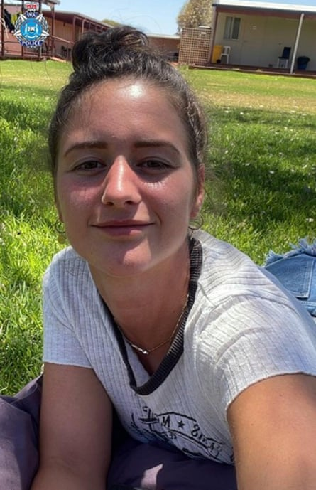
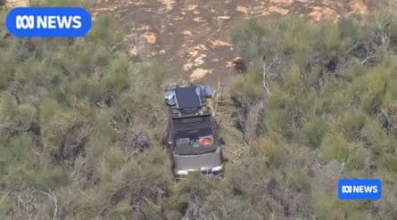

Carolina Wilga spent 11 freezing nights lost in the Western Australian outback, convinced she would never be found.
By “sheer luck” the confused and disoriented German backpacker came across a road, where she flagged down a woman in a passing car on Friday afternoon.
An “exhausted, dehydrated and hungry” Wilga has spoken to her family, had a good night’s sleep, a shower and some food, WA police acting detective inspector Jessica Securo said on Saturday.
“This is the best result we could have hoped for,” she said.
“We’re incredibly grateful that she’s been found safe, and obviously this is a huge relief for her family and all of her loved ones.
Caroline Wilga survived 11 nights in the WA wilderness with minimal food and water.Photograph: WA police
“We never gave up hope that Carolina would be found safe and well … the support of our WA community is our greatest asset, particularly in a state as vast as ours.
“It’s sheer luck. The area out there is mixed terrain. It can be quite dangerous if you don’t know what you’re doing or where you’re going, and it’s very easy to get lost.”
Police confirmed on Friday night that Wilga, 26, had been found “safe and well”. She had been “ravaged” by mosquitoes, was dehydrated, exhausted, starving and had minor injuries including cuts and bruises, and was airlifted to a Perth hospital.
The temperature in the area had dropped down to 0C at night and there was heavy rain.
On 29 June, Wilga had visited a shop in Beacon, a small town about 300km north-east of Perth in WA. Her family and friends had not heard from her since and raised the alarm.
Police and volunteers started searching the remote wheatbelt area and beyond.
Wilga’s Mitsubishi van was found bogged and abandoned in Karroun Hill, about 150km from Beacon, on Thursday. Securo said Wilga had “somewhat lost control of the vehicle”, which had then become “mechanically unsound and bogged”.
She had stayed with the car for just a day before panicking and striking out to find help, Securo said, and had used the sun’s position to head west. She had minimal food and water.
“She is still in disbelief that she was able to survive,” Securo said.
“In her mind, she had convinced herself that she was not going to be located … I’m sure she got to a point where she thought no one was coming.”
Wilga was found about 24km from her car.
Securo said Wilga was “very traumatised” and “just overwhelmed” to have been found, and that the woman who found her was “quite overwhelmed herself”.
Carolina Wilga’s van was found abandoned in Karroun Hill nature reserve.Photograph: ABC
“We are extremely thankful for her stopping and giving Carolina assistance,” she said.
Wilga had planned to explore WA then head north, Securo said, and still plans to travel Australia, with the east coast “on her bucket list”.
Wilga’s rescuer described it as a “miracle” that she survived, according to the ABC .
Tania, a local farming resident who did not want her surname used, said Wilga was “on the side of the road waving her hands” and she immediately knew who it was.
“Obviously, there is nobody who comes up my way walking around,” she said.
“She was in a fragile state, but she was well. Thin, but well. She’d been bitten by a lot of midgies. She said it was very, very cold.”
Tania said Wilga had no shoes on, and that it could have been days before someone else drove down that road. “Miracle is a word that gets bandied about a lot, but to survive 12 days and cross-country – she went cross country to come to my road,” she said.
WA police inspector Martin Glynn said Wilga had survived in a “really, really challenging environment”.
“As you can imagine, from the trauma she suffered for the last few days, she’s been obviously through a great deal,” Glynn said.
“She does have some injuries. She’s been ravaged by mosquitoes. She’s obviously been through an amazing journey, a trauma, no doubt – a testimony to demonstrating her bravery in those circumstances.
“There’s a very hostile environment out there, both from flora and fauna.”
The WA premier, Roger Cook, said he was “incredibly relieved” that Wilga had been found alive.
“This news is nothing short of remarkable,” he wrote on Facebook.
“We’re yet to have the full picture of what happened, but … we can all breathe a little easier knowing Carolina is safe and well.”